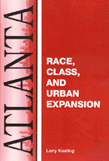

Troubling stories about private interests over public development in Atlanta
Troubling stories about private interests over public development in Atlanta


 Troubling stories about private interests over public development in Atlanta
Troubling stories about private interests over public development in Atlanta

|  |
AtlantaRace, Class, and Urban ExpansionLarry Keatingpaper EAN: 978-1-56639-821-3 (ISBN: 1-56639-821-5) |
"Keating makes a unique contribution....this is an important addition to the literature on city planning, as well as on Atlanta. Keating builds a strong case that Atlanta has a history of an anti-planning mindset, and the origins of that mindset are readily explained. He has ample material to make his case."
—Professor Clarence N. Stone, Department of Government and Politics, University of Maryland, and author of Regime Politics
Atlanta, the epitome of the New South, is a city whose economic growth has transformed it from a provincial capital to a global city, one that could bid for and win the 1996 Summer Olympics. Yet the reality is that the exceptional growth of the region over the last twenty years has exacerbated inequality, particularly for African Americans. Atlanta, the city of Martin Luther King, Jr., remains one of the most segregated cities in the United States.
Despite African American success in winning the mayor's office and control of the City Council, development plans have remained in the control of private business interests. Keating tells a number of troubling stories. What the development of the Underground Atlanta, the construction of the Rapid Rail system (MARTA), the building of a new stadium for the Braves, the redevelopment of public housing, and the arrangements for the Olympic Games all have in common is a lack of democratic process. Instead, business and political elites ignored protests from neighborhood groups, the interests of the poor, and the advice of planners.
Excerpt available at www.temple.edu/tempress
"Larry Keating's study of Atlanta is more than a meticulous and provocative analysis of economic policy in one American city. It is also suggestive for the nation in showing how race and class intertwine to maintain economic injustice even after legal segregation has been abolished."
—Howard Zinn, columnist for The Progressive, and author of A People's History of the United States
"Skillfully blends the power analyses of modern Atlanta by Floyd Hunter and Clarence Stone with such classic exposés as those of Lincoln Steffens and Jane Jacobs to create a penetrating portrait of the 'Shame of a Southern City.' Larry Keating's landmark study should be read by historians, social scientists, city planners, decision makers and concerned city dwellers."
—Dana F. White, Professor of Urban Studies, Emory University, and author of The Urbanists, 1865-1915
"This book is not just an historical exposé on the city, but it's touted as shedding light on many issues such as corporate control of government, city politics and the Southern way of life. Keating ultimately reveals the imbalance between power and progress."
—Atlanta Tribune: The Magazine
"Keating's book offers a deeply critical analysis of urban planning and policy making in Atlanta's recent history...[he] has provided an excellent study of post-war urban policy and planning in Atlanta, while at the same time challenging the booster image of a rising global city promoted by a succession of elite decision-makers."
—Urban History
List of Maps and Tables
Acknowledgments
1. Introduction
2. Race, Class, and the Atlanta Economy
3. Race, Class, and the Atlanta Housing Market
4. Atlanta Politics and the Governing Elite
5. Redevelopment, Atlanta Style
6. MARTA
7. The Olympics Era
8. Downtown Redevelopment During the Olympics Era
9. Conclusion
Notes
Index
 | Larry Keating is Associate Professor of City and Regional Planning at Georgia Institute of Technology. He has worked with Atlanta low-income neighborhood groups and community development corporations for over twenty years, usually through the Community Design Center of Atlanta, which he co-founded in 1977. |
Urban Studies
Political Science and Public Policy
Comparative American Cities, edited by Joe T. Darden.
No longer active.
© 2015 Temple University. All Rights Reserved. This page: http://www.temple.edu/tempress/titles/942_reg.html.